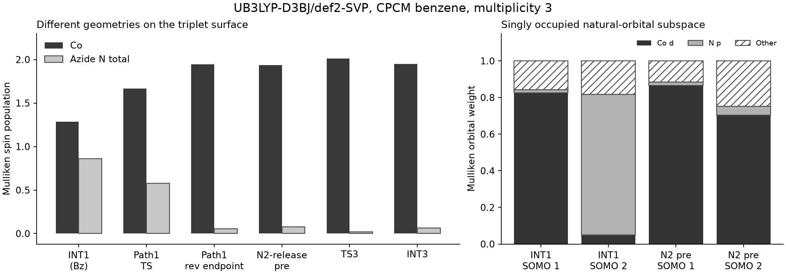

← 연구 대시보드³INT1–³INT3 스핀·오비탈 분석
2026-11-15 · 관련 원본 138개, Gaussian 구간 355개, checkpoint 8개 분석.
2026-11-15 후속 계산 완료INT1 동일 기하구조에서 자기 CHK, N₂ 방출 전 CHK, β181→185 / 181→188 / 183→185 / 183→188의 6개 guess를 실제 시험했다. 모두 E = −3997.56261714 Eh, ⟨S²⟩ = 2.059의 같은 안정 해로 수렴했고 02:03–02:09 KST에 정상 종료했다. 이번 시험에서는 별도의 안정 SCF 해를 얻지 못했다.
완료 근거 · 다음 계산: benzene 1차 탐색 4건 실행 중
현재 판단α-배위 INT1은 Co d 중심과 질소 p 중심의 단일 점유 오비탈을 하나씩 갖는다. N₂ 방출 반응물측은 두 단일 점유 오비탈 모두 Co d 성격이 크다. 교수님이 언급한 다른 전자배치를 시험할 물리적 근거가 있다. 고정 구조에서 6개 초기 guess를 실제 비교한 결과는 위 완료 기록과 같다. 경로 연결은 후속 구조 탐색으로 확인해야 한다.

1. 같은 triplet 안에서 스핀 위치가 달라진다
아래 비교는 모두 UB3LYP-D3BJ/def2-SVP, CPCM benzene, M = 3이다. Nα = 39번(아다만틸 C42에 결합), Nβ = 41번, Nγ = 40번이다. 파일명 순서와 azide의 화학적 질소 순서가 다르다.
α-INT1에서 N₂ 방출 반응물측으로 갈 때 Co spin은 1.284 → 1.934, 질소 합은 0.859 → 0.077로 바뀐다. ⟨S²⟩는 2.0590 → 2.0402로 모두 triplet 기준 2에 가깝다. Mulliken 값은 정량 분할 방식에 의존하므로 Co의 형식 산화수를 이 값만으로 지정하지 않는다. annihilation 이후 값은 상태 선택의 증거로 쓰지 않았다.
2. 오비탈 계수에서 확인한 전자배치
서버 CHK의 복사본을 fchk로 변환하고 α/β MO 계수를 읽었다. 완전한 정방 MO 계수행렬의 CᵀSC = I로 AO overlap을 복원했다. β MO의 직교성 잔차는 최대 1.4e-07; 계산한 ⟨S²⟩와 원자 spin population은 해당 원본 출력과 일치한다.
α 점유 186개, β 점유 184개에서 점유 α/β 공간을 대응시켜 정확히 단일 점유된 자연오비탈 공간을 구했다. 이 2차원 공간 안에서 Co Mulliken projector를 대각화해 두 SOMO를 구분했다. 아래 수치는 Mulliken AO 오비탈 가중치이며, 자연오비탈의 점유수 자체와 구별한다.
| 구조 | SOMO 1 Co d | SOMO 1 N p | SOMO 2 Co d | SOMO 2 N p |
|---|
| α-INT1 / benzene | 0.825 | 0.018 | 0.050 | 0.767 |
| N₂ 방출 반응물측 / benzene | 0.865 | 0.021 | 0.704 | 0.048 |
| ³TS3 / benzene | 0.848 | 0.017 | 0.794 | 0.010 |
INT1의 α HOMO(186번)가 N p 성격을 갖더라도 α HOMO와 β HOMO를 곧바로 두 SOMO로 해석하면 혼동이 생긴다. TS3에서는 α186과 β184가 모두 질소 p 성분 약 0.686으로 대응되며, 실제 단일 점유 자연오비탈 둘은 주로 Co에 놓인다.
3. 우선 시험할 orbital swap
대상은 /home/skylark/skylark/cosi-spin-analysis-20261115/3-Path1-forSiNBond-opt-freq-ts-freq-ircfwd-opt-freq.chk. 벤젠/def2-SVP의 α-배위 INT1이며 E = -3997.56261714200 Eh로 로컬 3-Path1-forSiNBond-…-ircfwd-opt-freq.out와 일치한다.
| β 점유 ↔ 가상 | 점유 오비탈 Co d 가중치 | 가상 오비탈과 질소 SOMO의 overlap² |
|---|
| β 181 ↔ 185 | 0.753 | 0.468 |
| β 181 ↔ 188 | 0.753 | 0.358 |
| β 183 ↔ 185 | 0.672 | 0.468 |
| β 183 ↔ 188 | 0.672 | 0.358 |
β181과 β183은 Co d 비중이 각각 0.753, 0.672이다. β185와 β188은 질소 SOMO의 대응 가상 공간에서 overlap² 0.468, 0.358를 갖는다. 따라서 Co의 β 전자를 질소 쪽으로 옮기는 초기 guess를 구성하면 금속에 두 비짝전자가 남는 배치를 시험할 수 있다. α 점유 186 / β 점유 184는 유지한다.
α 가상 187–211 범위에서 가장 큰 Co d 가중치는 α188의 0.150였다. 따라서 α186 → α187의 일반적인 HOMO–LUMO 교환보다 위 β 교환을 우선 시험한다. 이 번호는 위 checkpoint·기저·기하구조에 해당한다. 새로운 SCF 결과에서는 오비탈 성격을 다시 대응시킨다.
4. 기하구조와 경로 연결
| 구조 | Co–Nα / Å | Co–Nγ / Å | Si–Nγ / Å | Nα–Nβ / Å |
|---|
| INT1 (Bz) | 2.078 | 2.862 | 3.565 | 1.319 |
| Path1 TS | 2.119 | 2.512 | 2.394 | 1.322 |
| Path1 rev endpoint | 2.719 | 1.990 | 1.730 | 1.260 |
| gamma bridge | 3.746 | 1.954 | 1.765 | 1.256 |
| N2-release pre | 3.708 | 1.955 | 1.762 | 1.256 |
| TS3 | 2.070 | 3.120 | 2.085 | 1.553 |
| INT3 | 1.950 | 5.900 | 4.495 | 4.357 |
재계산 N₂ 방출 반응물측은 Co–Nγ = 1.955 Å, Si–Nγ = 1.762 Å이다. γ bridge 구조와의 Co–Si–N₃ 중심부 정렬 RMSD는 0.0267 Å, 고정 원자 대응으로 전체 heavy atom을 정렬한 RMSD는 0.8244 Å이다. 중심부 배위 방식은 유사하며 전체 리간드의 배치·원자 대응도 확인할 대상이다. 이 후보를 α 유래 중간체로 붙이기 전에 배위 방식과 연결을 확인해야 한다.
기존 Path1 TS에는 -213.7771 cm⁻¹의 허수 모드가 있으며 IRC fwd는 α-INT1 유사 구조, rev는 금속 중심 스핀의 γ 배위/bridging 구조로 간다. 이 모드의 결합길이 방향 투영 크기는 Si–Nγ 0.875, Co–Nγ 0.356, Nα–Nβ 0.011이다(출력의 정규화 변위 기준, 상대 크기 비교). 이 TS의 핵심 움직임은 γ 질소의 bridging 형성이다.
rev endpoint와 재계산 N₂ 방출 반응물측의 heavy-atom RMSD는 1.1888 Å, Co–Si–N₃ 중심부 RMSD는 0.7306 Å이다. Co–Nγ/Si–Nγ 배위는 유사하지만 아다만틸 쪽 Nα의 배향이 달라, 두 endpoint의 동일성과 중간 재배열 구간을 확인해야 한다.
5. 다음 계산의 최소 구성
- 모든 시험을 UB3LYP-D3BJ/def2-SVP, CPCM benzene, 같은 격자·SCF 조건과 고정 좌표로 수행한다. 기존 INT1 원본 일부는 acetone을 사용하므로 원표 에너지를 혼합하지 않는다.
- INT1 고정 구조에서 자기 CHK, Co 중심 반응물 CHK, 위 네 β-swap guess를 비교한다. 이 단계는 구조 최적화 없이 에너지·⟨S²⟩·원자 spin·자연오비탈 점유와 성격을 수집한다.
- 같은 조건의 N₂ 방출 반응물 구조와 Path1 TS 구조에서도 두 parent guess를 교차 적용한다.
Guess=Read 시 대상 좌표를 명시해 parent CHK의 다른 기하구조를 재사용하는 실수를 피한다. - 분리된 해가 유지되면
Stable=Opt로 고정 구조에서 안정성·더 낮은 해로의 수렴 여부를 확인한다. Guess=Alter는 초기 점유를 바꾸므로 SCF 후 최종 점유와 상태 성격을 확인한다. - 서로 다른 배치가 같은 구조에서 살아남는 경우, α 배위를 유지하는 완만한 좌표 변화에서 각 해를 따라간다. 구조·스핀 분포·오비탈 대응·SCF 에너지의 연속성을 기록하고 TS·freq·양방향 IRC를 검증한다.
위 1–5절은 초기 분석과 당시 제안이다. 이후 고정 구조 SCF·안정성 비교 6건을 완료했으며 같은 안정 해로 수렴했다. 새 구조 최적화·IRC는 아직 실행하지 않았다. 같은 구조의 복수 안정 해나 state crossing이 확인된 것은 아니다.
6. 기존 기록과 체크포인트 상태
Co-Si INT2관련 report.docx에는 서로 다른 CHK를 초기 guess로 사용해도 spin·에너지 변화가 작았다는 이전 시험이 있다. 이번 제안은 β 오비탈 점유를 직접 교환해 guess의 배치 차이를 더 분명히 만드는 시험이다.
출력의 안정성 확인 문구는 4개 job에서 확인했다. 주요 최종 freq/TS 구간 대부분에는 해당 기하구조에서의 안정성 확인 기록이 없다. 이전 job의 stable 문구를 후속 TS에 그대로 적용하지 않는다.
파일명이 오래된 NewSiCoA3TriprevIRC-ircrev-opt-freq.chk는 현재 benzene의 E = -3997.59783037713 Eh 구조를 담고 있어 acetone 원본 로그와 구분했다. 초기 formchk에서 이 CHK의 수정시각 변경을 감지했다. 이후 변환은 분석 폴더의 복사본으로 수행했다. 원본 output 파일은 변경하지 않았다.
원자료
355개 구간 spin 분석 CSV · 주요 구조 CSV · 분석·검증 수치 JSON · INT1 MO·swap 후보 JSON
Gaussian Guess 매뉴얼 · Stable 매뉴얼 · Population 매뉴얼